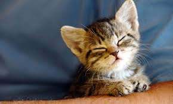
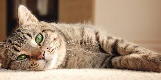
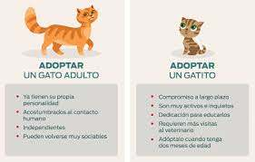

Gatitos
Gatitos Bebes
Gatitos Adultos
Adopta Gatitos
Gatitos bebes

- Dociles con otras mascotas
- Intensos
- Demandantes
Gatitos Adultos

- Tranquilos
- Compañeros
- Poco demandantes
Adopta Gatitos

Pasos para poder adoptar una mascota
- Tener un lugar donde puedan jugar y moverse
- Buscá un centro de adopción de mascotas
- Encontrá un gatito de dale mucho amor, es lo que más necesita!
Comentarios
Que hermosos que son!
Hay algún centro de adopción en mi zona? (soy de Adrogué)
Necesito tener un patio?